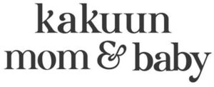

Trade Mark Journal No.2025/033 15 August 2025
WO0000001867341 (3,5,35)
Office of origin: Turkey
Date of International Registration:16 May 2025
Date of designation in the UK:
16 May 2025

- Class 3
- Baby shampoo, baby body wash, baby face lotion, baby face cream, baby sunscreen, baby body lotion, baby moisturizing lotions, non-medicated diaper rash cream, baby massage oils, balms, other than for medical purposes, bath preparations, not for medical purposes, cosmetic creams for adults, cosmetic preparations for skin care for adults, cosmetics for adults; cosmetics for children, essential oils, oils for cosmetic purposes, wet wipes, lotions for cosmetic purposes, sun-tanning preparations, perfumes, soaps.
- Class 5
- Antibacterial soap, anti-uric preparations, antiseptics, babies' diapers, disinfectant soap, sunburn ointments, medicated diaper rash cream, medicated eczema cream, medicated soaps, hand sanitizers, disinfectant soaps, disinfectant cleaning preparations for household and professional use, all aforementioned goods excluding eye drops and ophthalmic preparations.
- Class 35
- Advertising, marketing and public relations; organization of exhibitions and trade fairs for commercial or advertising purposes; provision of an online marketplace for buyers and sellers of goods and services; office functions; secretarial services; arranging newspaper subscriptions for others; compilation of statistics; rental of office machines; systemization of information into computer databases; telephone answering for unavailable subscribers; business management, business administration and business consultancy; accounting; commercial consultancy services; personnel recruitment, personnel placement, employment agencies, import-export agencies; temporary personnel placement services; auctioneering; the bringing together, for the benefit of others, of a variety of goods, namely, bleaching and cleaning preparations, detergents other than for use in manufacturing operations and for medical purposes, laundry bleach, fabric softeners for laundry use, stain removers, dishwasher detergents, perfumery, non-medicated cosmetics, fragrances, deodorants for personal use and animals, baby shampoo, baby body wash, baby face lotion, baby face cream, baby sunscreen, baby body lotion, baby moisturizing lotions, non-medicated diaper rash cream, baby massage oils, balms, other than for medical purposes, bath preparations, not for medical purposes, cosmetic creams for adults, cosmetic preparations for skin care for adults, cosmetics for adults, cosmetics for children, essential oils, oils for cosmetic purposes, wet wipes, lotions for cosmetic purposes, sun-tanning preparations, perfumes, soaps, oral care products, toothpaste, tooth polishing and whitening preparations, non-medicated mouth rinses, abrasive products, sandpaper, abrasive cloths, pumice stones, abrasive pastes, polishing and maintenance products for leather, vinyl, metal, and wood, polishes, care creams, waxes for polishing, pharmaceutical and veterinary preparations for medical purposes, chemical preparations for medical purposes, medicated cosmetic, dietary supplements, including those adapted for medical purposes, nutritional supplements, dietary supplements for slimming purposes, food for babies, herbs and herbal beverages adapted for medicinal purposes, medicated cosmetics, excluding eye drops and ophthalmic preparations, antibacterial soap, anti-uric preparations, antiseptics, babies' diapers, disinfectant soap, sunburn ointments, medicated diaper rash cream, medicated eczema cream, medicated soaps, hand sanitizers, disinfectant soaps, disinfectant cleaning preparations for household and professional use, all aforementioned goods excluding eye drops and ophthalmic preparations, dietetic substances adapted for medical and veterinary use, dietary supplements for humans and animals, nutritional supplements, pharmaceutical preparations for weight loss, infant formula, medicinal herbs and herbal teas for medical use, products for dentistry (excluding instruments/devices), dietary supplements for pharmaceutical and veterinary purposes, dietary supplements, nutritional supplements, medical preparations for slimming purposes, food for babies, herbs and herbal beverages adapted for medicinal purposes, dental filling materials, dental impression materials, adhesives and repair materials for prosthetics and artificial teeth, sanitary preparations for medical use, hygienic pads, hygienic tampons, plasters, materials for dressings, diapers made of paper and textiles for babies, adults and pets, hygiene products, sanitary pads, tampons, medical plasters, dressing materials, paper and textile diapers for children, adults, and pets, preparations for destroying vermin, herbicides, fungicides, preparations for destroying rodents, deodorants, other than for human beings or for animals, air purifying preparations, air deodorising preparations, disinfectants, antiseptics, detergents for medical purposes, medicated soaps, disinfectant soaps, antibacterial hand lotions, substances for the destruction of harmful insects, plants, fungi and rodents, deodorants (excluding those for humans and animals), air purifying and odor-neutralizing preparations, disinfectants, antiseptics (germicides), medical detergents, enabling customers to conveniently view and purchase those goods, such services may be provided by retail stores, wholesale outlets, by means of electronic media or through mail order catalogues.
KAKUUN BRANDS KOZMETİK DIŞ TİCARET ANONİM ŞİRKETİ
Representative: ERK PATENT MARKA VE FİKRİ HAKLAR DANIŞMANLIĞI LİMİTED ŞİRKETİ, Halk Sk. No:46 K:6 D:13 Sahrayıcedit,, Kadıköy, İstanbul, TURKEY